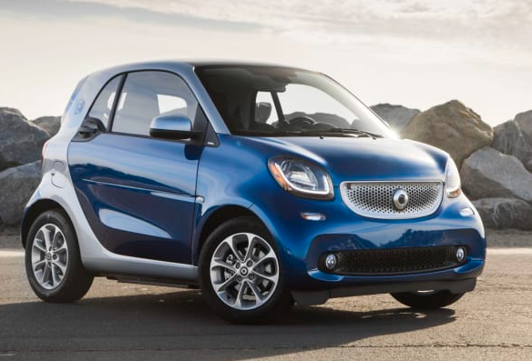
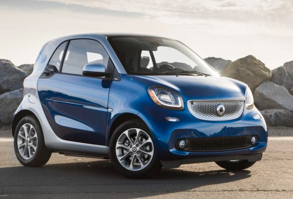
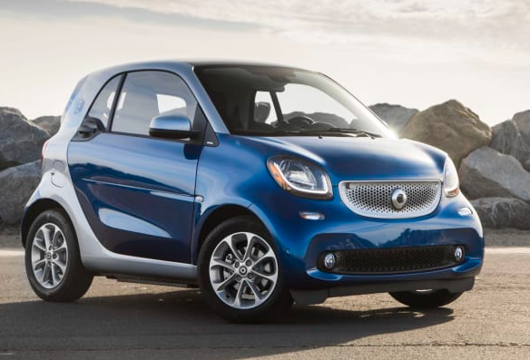
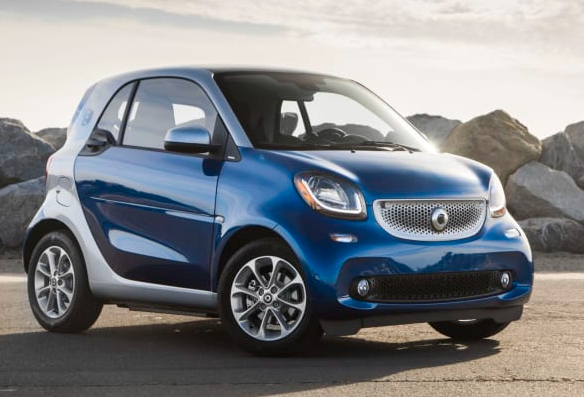

The Smart EQ Fortwo, formerly Smart Fortwo electric drive, smart ed or Smart Fortwo EV, is a battery electric vehicle variant of the Smart Fortwo city car made by Smart. The Smart EQ Forfour is an electric variant of the larger Smart Forfour city car. Field testing of the electric Smart Fortwo began in London with 100 units in 2007. The second generation was introduced in 2009 and was available in 18 markets around the world for leasing or through the Car2Go carsharing service in selected cities, with over 2,300 units delivered.